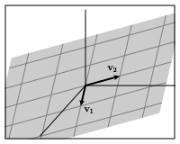

Section 2.3 The span of a set of vectors
Matrix multiplication allows us to rewrite a linear system in the form \(A\xvec = \bvec\text{.}\) Besides being a more compact way of expressing a linear system, this form allows us to think about linear systems geometrically since matrix multiplication is defined in terms of linear combinations of vectors.
We now return to our two fundamental questions, rephrased here in terms of matrix multiplication.
Existence: Is there a solution to the equation \(A\xvec=\bvec\text{?}\)
Uniqueness: If there is a solution to the equation \(A\xvec=\bvec\text{,}\) is it unique?
In this section, we focus on the existence question and see how it leads to the concept of the span of a set of vectors.
Preview Activity 2.3.1. The existence of solutions.
If the equation \(A\xvec = \bvec\) is inconsistent, what can we say about the pivot positions of the augmented matrix \(\left[\begin{array}{r|r} A \amp \bvec \end{array}\right]\text{?}\)
-
Consider the matrix \(A\)
\begin{equation*} A = \left[ \begin{array}{rrr} 1 \amp 0 \amp -2 \\ -2 \amp 2 \amp 2 \\ 1 \amp 1 \amp -3 \end{array}\right]\text{.} \end{equation*}If \(\bvec=\threevec{2}{2}{5}\text{,}\) is the equation \(A\xvec = \bvec\) consistent? If so, find a solution.
If \(\bvec=\threevec{2}{2}{6}\text{,}\) is the equation \(A\xvec = \bvec\) consistent? If so, find a solution.
Identify the pivot positions of \(A\text{.}\)
For our two choices of the vector \(\bvec\text{,}\) one equation \(A\xvec = \bvec\) has a solution and the other does not. What feature of the pivot positions of the matrix \(A\) tells us to expect this?
Subsection 2.3.1 The span of a set of vectors
In the preview activity, we considered a \(3\times3\) matrix \(A\) and found that the equation \(A\xvec = \bvec\) has a solution for some vectors \(\bvec\) in \(\real^3\) and has no solution for others. We will introduce a concept called span that describes the vectors \(\bvec\) for which there is a solution.
We can write an \(m\times n\) matrix \(A\) in terms of its columns
Remember that Proposition 2.2.4 says that the equation \(A\xvec = \bvec\) is consistent if and only if we can express \(\bvec\) as a linear combination of \(\vvec_1,\vvec_2,\ldots,\vvec_n\text{.}\)
Definition 2.3.1.
The span of a set of vectors \(\vvec_1,\vvec_2,\ldots,\vvec_n\) is the set of all linear combinations that can be formed from the vectors.
Alternatively, if \(A = \begin{bmatrix} \vvec_1 \amp \vvec_2 \amp \cdots \amp \vvec_n \end{bmatrix}\text{,}\) then the span of the vectors consists of all vectors \(\bvec\) for which the equation \(A\xvec = \bvec\) is consistent.
Example 2.3.2.
Considering the set of vectors \(\vvec=\twovec{-2}{1}\) and \(\wvec = \twovec{8}{-4}\text{,}\) we see that the vector
is one vector in the span of the vectors \(\vvec\) and \(\wvec\) because it is a linear combination of \(\vvec\) and \(\wvec\text{.}\)
To determine whether the vector \(\bvec=\twovec{5}{2}\) is in the span of \(\vvec\) and \(\wvec\text{,}\) we form the matrix
and consider the equation \(A\xvec=\bvec\text{.}\) We have
which shows that the equation \(A\xvec = \bvec\) is inconsistent. Therefore, \(\bvec=\twovec52\) is one vector that is not in the span of \(\vvec\) and \(\wvec\text{.}\)
Activity 2.3.2.
Let's look at two examples to develop some intuition for the concept of span.
-
First, we will consider the set of vectors
\begin{equation*} \vvec = \twovec{1}{2}, ~~~\wvec = \twovec{-2}{-4}\text{.} \end{equation*}The diagram below can be used to construct linear combinations whose weights \(c\) and \(d\) may be varied using the sliders at the top. The vectors \(\vvec\) and \(\wvec\) are outlined while the linear combination
\begin{equation*} c\vvec + d\wvec \end{equation*}is shaded in red.
Figure 2.3.3. An interactive diagram for constructing linear combinations of the vectors \(\vvec\) and \(\wvec\text{.}\) -
What vector is the linear combination of \(\vvec\) and \(\wvec\) with weights:
\(c = 2\) and \(d=0\text{?}\)
\(c = 1\) and \(d=1\text{?}\)
\(c = 0\) and \(d=-1\text{?}\)
Can the vector \(\twovec{2}{4}\) be expressed as a linear combination of \(\vvec\) and \(\wvec\text{?}\) Is the vector \(\twovec{2}{4}\) in the span of \(\vvec\) and \(\wvec\text{?}\)
Can the vector \(\twovec{3}{0}\) be expressed as a linear combination of \(\vvec\) and \(\wvec\text{?}\) Is the vector \(\twovec{3}{0}\) in the span of \(\vvec\) and \(\wvec\text{?}\)
Describe the set of vectors in the span of \(\vvec\) and \(\wvec\text{.}\)
-
For what vectors \(\bvec\) does the equation
\begin{equation*} \left[\begin{array}{rr} 1 \amp -2 \\ 2 \amp -4 \end{array}\right] \xvec = \bvec \end{equation*}have a solution?
-
-
We will now look at an example where
\begin{equation*} \vvec = \twovec{2}{1}, ~~~\wvec = \twovec{1}{2}\text{.} \end{equation*}In a similar way, the diagram below can be used to construct linear combinations
\begin{equation*} c\vvec + d\wvec. \end{equation*}Figure 2.3.4. An interactive diagram for constructing linear combinations of the vectors \(\vvec\) and \(\wvec\text{.}\) -
What vector is the linear combination of \(\vvec\) and \(\wvec\) with weights:
\(c = 2\) and \(d=0\text{?}\)
\(c = 1\) and \(d=1\text{?}\)
\(c = 0\) and \(d=-1\text{?}\)
Can the vector \(\twovec{-2}{2}\) be expressed as a linear combination of \(\vvec\) and \(\wvec\text{?}\) Is the vector \(\twovec{-2}{2}\) in the span of \(\vvec\) and \(\wvec\text{?}\)
Can the vector \(\twovec{3}{0}\) be expressed as a linear combination of \(\vvec\) and \(\wvec\text{?}\) Is the vector \(\twovec{3}{0}\) in the span of \(\vvec\) and \(\wvec\text{?}\)
Describe the set of vectors in the span of \(\vvec\) and \(\wvec\text{.}\)
-
For what vectors \(\bvec\) does the equation
\begin{equation*} \left[\begin{array}{rr} 2 \amp 1 \\ 1 \amp 2 \end{array}\right] \xvec = \bvec \end{equation*}have a solution?
-
This activity aims to convey the geometric meaning of span. Remember that we can think of a linear combination of the two vectors \(\vvec\) and \(\wvec\) as a recipe for walking in the plane \(\real^2\text{.}\) We first move a prescribed amount in the direction of \(\vvec\) and then a prescribed amount in the direction of \(\wvec\text{.}\) The span consists of all the places we can walk to.
Example 2.3.5.
Let's consider the vectors \(\vvec=\twovec20\) and \(\wvec=\twovec{-1}1\) as shown in Figure 2.3.6.

The figure shows us that \(\bvec = \vvec + 2\wvec = \twovec02\) is a linear combination of \(\vvec\) and \(\wvec\text{.}\) Indeed, we can verify this algebraically by constructing the linear system
whose corresponding augmented matrix has the reduced row echelon form
Because this system is consistent, we know that \(\bvec=\twovec02\) is in the span of \(\vvec\) and \(\wvec\text{.}\)
In fact, we can say more. Notice that the coefficient matrix
has a pivot position in every row. This means that for any other vector \(\bvec\text{,}\) the augmented matrix corresponding to the equation \(\begin{bmatrix}\vvec \amp \wvec \end{bmatrix} ~\xvec = \bvec\) cannot have a pivot position in its rightmost column:
Therefore, the equation \(\begin{bmatrix}\vvec \amp \wvec \end{bmatrix} ~\xvec = \bvec\) is consistent for every two-dimensional vector \(\bvec\text{,}\) which tells us that every two-dimensional vector is in the span of \(\vvec\) and \(\wvec\text{.}\) In this case, we say that the span of \(\vvec\) and \(\wvec\) is \(\real^2\text{.}\)
The intuitive meaning is that we can walk to any point in the plane by moving an appropriate distance in the \(\vvec\) and \(\wvec\) directions.
Example 2.3.7.
Now let's consider the vectors \(\vvec=\twovec{-1}1\) and \(\wvec=\twovec2{-2}\) as shown in Figure 2.3.8.

From the figure, we expect that \(\bvec = \twovec02\) is not a linear combination of \(\vvec\) and \(\wvec\text{.}\) Once again, we can verify this algebraically by constructing the linear system
The augmented matrix has the reduced row echelon form
from which we see that the system is inconsistent. Therefore, \(\bvec=\twovec02\) is not in the span of \(\vvec\) and \(\wvec\text{.}\)
We should expect this behavior from the coefficient matrix
Because the second row of the coefficient matrix does not have a pivot position, it is possible for a linear system \(\begin{bmatrix}\vvec \amp \wvec \end{bmatrix} ~\xvec = \bvec\) to have a pivot position in its rightmost column:
If we notice that \(\wvec = -2\vvec\text{,}\) we see that any linear combination of \(\vvec\) and \(\wvec\text{,}\)
is actually a scalar multiple of \(\vvec\text{.}\) Therefore, the span of \(\vvec\) and \(\wvec\) is the line defined by the vector \(\vvec\text{.}\) Intuitively, this means that we can only walk to points on this line using these two vectors.
Notation 2.3.9.
We will denote the span of the set of vectors \(\vvec_1,\vvec_2,\ldots,\vvec_n\) by \(\laspan{\vvec_1,\vvec_2,\ldots,\vvec_n}\text{.}\)
In Example 2.3.5, we saw that \(\laspan{\vvec,\wvec} = \real^2\text{.}\) However, for the vectors in Example 2.3.7, we saw that \(\laspan{\vvec,\wvec}\) is simply a line.
Subsection 2.3.2 Pivot positions and span
A set of vectors \(\vvec_1,\vvec_2,\ldots,\vvec_n\) naturally defines a matrix \(A = \begin{bmatrix}\vvec_1\amp\vvec_2\amp\cdots\vvec_n\end{bmatrix}\) whose columns are the given vectors. As we've seen, a vector \(\bvec\) is in \(\laspan{\vvec_1,\vvec_2,\ldots,\vvec_n}\) precisely when the linear system \(A\xvec=\bvec\) is consistent.
The previous examples point to the fact that the span is related to the pivot positions of \(A\text{.}\) While Section 2.4 and Section 3.5 develop this idea more fully, we will now examine the possibilities in \(\real^3\text{.}\)
Activity 2.3.3.
In this activity, we will look at the span of sets of vectors in \(\real^3\text{.}\)
-
Suppose \(\vvec=\threevec{1}{2}{1}\text{.}\) Give a geometric description of \(\laspan{\vvec}\) and a rough sketch of \(\vvec\) and its span in Figure 2.3.10.

Figure 2.3.10. A three-dimensional coordinate system for sketching \(\vvec\) and its span. -
Now consider the two vectors
\begin{equation*} \evec_1 = \threevec{1}{0}{0},~~~ \evec_2 = \threevec{0}{1}{0}\text{.} \end{equation*}Sketch the vectors below. Then give a geometric description of \(\laspan{\evec_1,\evec_2}\) and a rough sketch of the span in Figure 2.3.11.
Figure 2.3.11. A coordinate system for sketching \(\evec_1\text{,}\) \(\evec_2\text{,}\) and \(\laspan{\evec_1,\evec_2}\text{.}\) -
Let's now look at this situation algebraically by writing write \(\bvec = \threevec{b_1}{b_2}{b_3}\text{.}\) Determine the conditions on \(b_1\text{,}\) \(b_2\text{,}\) and \(b_3\) so that \(\bvec\) is in \(\laspan{\evec_1,\evec_2}\) by considering the linear system
\begin{equation*} \left[\begin{array}{rr} \evec_1 \amp \evec_2 \\ \end{array}\right] ~\xvec = \bvec \end{equation*}or
\begin{equation*} \left[\begin{array}{rr} 1 \amp 0 \\ 0 \amp 1 \\ 0 \amp 0 \\ \end{array}\right] \xvec = \threevec{b_1}{b_2}{b_3}\text{.} \end{equation*}Explain how this relates to your sketch of \(\laspan{\evec_1,\evec_2}\text{.}\)
-
Consider the vectors
\begin{equation*} \vvec_1 = \threevec{1}{1}{-1},~~ \vvec_2 = \threevec{0}{2}{1}. \end{equation*}Is the vector \(\bvec=\threevec{1}{-2}{4}\) in \(\laspan{\vvec_1,\vvec_2}\text{?}\)
Is the vector \(\bvec=\threevec{-2}{0}{3}\) in \(\laspan{\vvec_1,\vvec_2}\text{?}\)
Give a geometric description of \(\laspan{\vvec_1,\vvec_2}\text{.}\)
-
Consider the vectors
\begin{equation*} \vvec_1 = \threevec{1}{1}{-1}, \vvec_2 = \threevec{0}{2}{1}, \vvec_3 = \threevec{1}{-2}{4}\text{.} \end{equation*}Form the matrix \(\left[\begin{array}{rrrr} \vvec_1 \amp \vvec_2 \amp \vvec_3 \end{array}\right]\) and find its reduced row echelon form.
What does this tell you about \(\laspan{\vvec_1,\vvec_2,\vvec_3}\text{?}\) If the span of a set of vectors \(\vvec_1,\vvec_2,\ldots,\vvec_n\) is \(\real^3\text{,}\) what can you say about the pivot positions of the matrix \(\left[\begin{array}{rrrr} \vvec_1\amp\vvec_2\amp\ldots\amp\vvec_n \end{array}\right]\text{?}\)
What is the smallest number of vectors such that \(\laspan{\vvec_1,\vvec_2,\ldots,\vvec_n} = \real^3\text{?}\)
The types of sets that appear as the span of a set of vectors in \(\real^3\) are relatively simple.
-
First, with a single nonzero vector, all linear combinations are simply scalar multiples of that vector so that the span of this vector is a line, as shown in Figure 2.3.12.

Figure 2.3.12. The span of a single nonzero vector is a line. Notice that the matrix formed by this vector has one pivot position. For example,
\begin{equation*} \threevec{-2}{3}{1} \sim \threevec{1}{0}{0}\text{.} \end{equation*} -
The span of two vectors in \(\real^3\) that do not lie on the same line will be a plane, as seen in Figure 2.3.13.
Figure 2.3.13. The span of these two vectors in \(\real^3\) is a plane. For example, the vectors
\begin{equation*} \vvec_1=\threevec{-2}{3}{1},~~~ \vvec_2=\threevec{1}{-1}{3} \end{equation*}lead to the matrix
\begin{equation*} \left[\begin{array}{rr} -2 \amp 1 \\ 3 \amp -1 \\ 1 \amp 3 \\ \end{array}\right] \sim \left[\begin{array}{rr} 1 \amp 0 \\ 0 \amp 1 \\ 0 \amp 0 \\ \end{array}\right] \end{equation*}with two pivot positions.
-
Finally, a set of three vectors, such as
\begin{equation*} \vvec_1=\threevec12{-1},~~~ \vvec_2=\threevec201,~~~ \vvec_3=\threevec{-2}20 \end{equation*}may form a matrix having three pivot positions
\begin{equation*} \left[\begin{array}{rrr} \vvec_1 \amp \vvec_2 \amp \vvec_3 \end{array}\right] = \left[\begin{array}{rrr} 1 \amp 2 \amp -2 \\ 2 \amp 0 \amp 2 \\ -1 \amp 1 \amp 0 \\ \end{array}\right] \sim \left[\begin{array}{rrr} 1 \amp 0 \amp 0 \\ 0 \amp 1 \amp 0 \\ 0 \amp 0 \amp 1 \\ \end{array}\right], \end{equation*}one in every row. When this happens, no matter how we augment this matrix, it is impossible to obtain a pivot position in the rightmost column:
\begin{equation*} \left[\begin{array}{rrr|r} 1 \amp 2 \amp -2 \amp *\\ 2 \amp 0 \amp 2 \amp * \\ -1 \amp 1 \amp 0 \amp * \\ \end{array}\right] \sim \left[\begin{array}{rrr|r} 1 \amp 0 \amp 0 \amp *\\ 0 \amp 1 \amp 0 \amp * \\ 0 \amp 0 \amp 1 \amp * \\ \end{array}\right]. \end{equation*}Therefore, any linear system \(\begin{bmatrix}\vvec_1\amp\vvec_2\amp\vvec_3\end{bmatrix} ~\xvec = \bvec\) is consistent, which tells us that \(\laspan{\vvec_1,\vvec_2,\vvec_3} = \real^3\text{.}\)
To summarize, we looked at the pivot positions in a matrix whose columns are the three-dimensional vectors \(\vvec_1,\vvec_2,\ldots,\vvec_n\text{.}\) We found that with
one pivot position, the span was a line.
two pivot positions, the span was a plane.
three pivot positions, the span was \(\real^3\text{.}\)
Though we will return to these ideas later, for now take note of the fact that the span of a set of vectors in \(\real^3\) is a relatively simple, familiar geometric object.
The reasoning we led us to conclude that the span of a set of vectors is \(\real^3\) when the associated matrix has a pivot position in every row applies more generally.
Proposition 2.3.14.
Suppose we have vectors \(\vvec_1,\vvec_2,\ldots,\vvec_n\) in \(\real^m\text{.}\) Then \(\laspan{\vvec_1,\vvec_2,\ldots,\vvec_n}=\real^m\) if and only if the matrix \(\left[\begin{array}{rrrr} \vvec_1\amp\vvec_2\amp\cdots\amp\vvec_n \end{array}\right]\) has a pivot position in every row.
This tells us something important about the number of vectors needed to span \(\real^m\text{.}\) Suppose we have \(n\) vectors \(\vvec_1,\vvec_2,\ldots,\vvec_n\) that span \(\real^m\text{.}\) The proposition tells us that the matrix \(A = \left[\begin{array}{rrrr} \vvec_1\amp\vvec_2\amp\ldots\amp\vvec_n \end{array}\right]\) has a pivot position in every row, such as in this reduced row echelon matrix.
Since a matrix can have at most one pivot position in a column, there must be at least as many columns as there are rows, which implies that \(n\geq m\text{.}\) For instance, if we have a set of vectors that span \(\real^{632}\text{,}\) there must be at least 632 vectors in the set.
Proposition 2.3.15.
A set of vectors whose span is \(\real^m\) contains at least \(m\) vectors.
We have thought about a linear combination of a set of vectors \(\vvec_1,\vvec_2,\ldots,\vvec_n\) as the result of walking a certain distance in the direction of \(\vvec_1\text{,}\) followed by walking a certain distance in the direction of \(\vvec_2\text{,}\) and so on. If \(\laspan{\vvec_1,\vvec_2,\ldots,\vvec_n} = \real^m\text{,}\) this means that we can walk to every point in \(\real^m\) using the directions \(\vvec_1,\vvec_2,\ldots,\vvec_n\text{.}\) Intuitively, this proposition is telling us that we need at least \(m\) directions to have the flexibility needed to reach every point in \(\real^m\text{.}\)
Terminology.
Because span is a concept that is connected to a set of vectors, we say, “The span of the set of vectors \(\vvec_1, \vvec_2, \ldots, \vvec_n\) is ....” While it may be tempting to say, “The span of the matrix \(A\) is ...,” we should instead say “The span of the columns of the matrix \(A\) is ....”
Subsection 2.3.3 Summary
We defined the span of a set of vectors and developed some intuition for this concept through a series of examples.
The span of a set of vectors \(\vvec_1,\vvec_2,\ldots,\vvec_n\) is the set of linear combinations of the vectors. We denote the span by \(\laspan{\vvec_1,\vvec_2,\ldots,\vvec_n}\text{.}\)
-
A vector \(\bvec\) is in \(\laspan{\vvec_1,\vvec_2,\ldots,\vvec_n}\) if an only if the linear system
\begin{equation*} \left[\begin{array}{rrrr} \vvec_1\amp\vvec_2\amp\ldots\vvec_n \end{array}\right] ~\xvec = \bvec \end{equation*}is consistent.
-
If the \(m\times n\) matrix
\begin{equation*} \left[\begin{array}{rrrr} \vvec_1\amp\vvec_2\amp\ldots\vvec_n \end{array}\right] \end{equation*}has a pivot position in every row, then the span of these vectors is \(\real^m\text{;}\) that is, \(\laspan{\vvec_1,\vvec_2,\ldots,\vvec_n} = \real^m\text{.}\)
Any set of vectors that spans \(\real^m\) must have at least \(m\) vectors.
Exercises 2.3.4 Exercises
1.
In this exercise, we will consider the span of some sets of two- and three-dimensional vectors.
-
Consider the vectors
\begin{equation*} \vvec_1 = \twovec{1}{-2}, \vvec_2 = \twovec{4}{3}\text{.} \end{equation*}Is \(\bvec = \twovec{2}{1}\) in \(\laspan{\vvec_1,\vvec_2}\text{?}\)
Give a geometric description of \(\laspan{\vvec_1,\vvec_2}\text{.}\)
-
Consider the vectors
\begin{equation*} \vvec_1=\threevec{2}{1}{3}, \vvec_2=\threevec{-2}{0}{2}, \vvec_3=\threevec{6}{1}{-1}\text{.} \end{equation*}Is the vector \(\bvec=\threevec{-10}{-1}{5}\) in \(\laspan{\vvec_1,\vvec_2,\vvec_3}\text{?}\)
Is the vector \(\vvec_3\) in \(\laspan{\vvec_1,\vvec_2,\vvec_3}\text{?}\)
Is the vector \(\bvec=\threevec{3}{3}{-1}\) in \(\laspan{\vvec_1,\vvec_2,\vvec_3}\text{?}\)
Give a geometric description of \(\laspan{\vvec_1,\vvec_2,\vvec_3}\text{.}\)
2.
Provide a justification for your response to the following questions.
Suppose you have a set of vectors \(\vvec_1,\vvec_2,\ldots,\vvec_n\text{.}\) Can you guarantee that \(\zerovec\) is in \(\laspan{\vvec_1\,\vvec_2,\ldots,\vvec_n}\text{?}\)
Suppose that \(A\) is an \(m \times n\) matrix. Can you guarantee that the equation \(A\xvec = \zerovec\) is consistent?
What is \(\laspan{\zerovec,\zerovec,\ldots,\zerovec}\text{?}\)
3.
For both parts of this exercise, give a geometric description of sets of the vectors \(\bvec\) and include a sketch.
-
For which vectors \(\bvec\) in \(\real^2\) is the equation
\begin{equation*} \left[\begin{array}{rr} 3 \amp -6 \\ -2 \amp 4 \\ \end{array}\right] \xvec = \bvec \end{equation*}consistent?
-
For which vectors \(\bvec\) in \(\real^2\) is the equation
\begin{equation*} \left[\begin{array}{rr} 3 \amp -6 \\ -2 \amp 2 \\ \end{array}\right] \xvec = \bvec \end{equation*}consistent?
4.
Consider the following matrices:
Do the columns of \(A\) span \(\real^4\text{?}\) Do the columns of \(B\) span \(\real^4\text{?}\)
5.
Determine whether the following statements are true or false and provide a justification for your response. Throughout, we will assume that the matrix \(A\) has columns \(\vvec_1,\vvec_2,\ldots,\vvec_n\text{;}\) that is,
If the equation \(A\xvec = \bvec\) is consistent, then \(\bvec\) is in \(\laspan{\vvec_1,\vvec_2,\ldots,\vvec_n}\text{.}\)
The equation \(A\xvec = \vvec_1\) is consistent.
If \(\vvec_1\text{,}\) \(\vvec_2\text{,}\) \(\vvec_3\text{,}\) and \(\vvec_4\) are vectors in \(\real^3\text{,}\) then their span is \(\real^3\text{.}\)
If \(\bvec\) can be expressed as a linear combination of \(\vvec_1, \vvec_2,\ldots,\vvec_n\text{,}\) then \(\bvec\) is in \(\laspan{\vvec_1,\vvec_2,\ldots,\vvec_n}\text{.}\)
If \(A\) is a \(8032\times 427\) matrix, then the span of the columns of \(A\) is a set of vectors in \(\real^{427}\text{.}\)
6.
This exercise asks you to construct some matrices whose columns span a given set.
Construct a \(3\times3\) matrix whose columns span \(\real^3\text{.}\)
Construct a \(3\times3\) matrix whose columns span a plane in \(\real^3\text{.}\)
Construct a \(3\times3\) matrix whose columns span a line in \(\real^3\text{.}\)
7.
Provide a justification for your response to the following questions.
Suppose that we have vectors in \(\real^8\text{,}\) \(\vvec_1,\vvec_2,\ldots,\vvec_{10}\text{,}\) whose span is \(\real^8\text{.}\) Can every vector \(\bvec\) in \(\real^8\) be written as a linear combination of \(\vvec_1,\vvec_2,\ldots,\vvec_{10}\text{?}\)
Suppose that we have vectors in \(\real^8\text{,}\) \(\vvec_1,\vvec_2,\ldots,\vvec_{10}\text{,}\) whose span is \(\real^8\text{.}\) Can every vector \(\bvec\) in \(\real^8\) be written uniquely as a linear combination of \(\vvec_1,\vvec_2,\ldots,\vvec_{10}\text{?}\)
-
Do the vectors
\begin{equation*} \evec_1=\threevec{1}{0}{0}, \evec_2=\threevec{0}{1}{0}, \evec_3=\threevec{0}{0}{1} \end{equation*}span \(\real^3\text{?}\)
Suppose that \(\vvec_1,\vvec_2,\ldots,\vvec_n\) span \(\real^{438}\text{.}\) What can you guarantee about the value of \(n\text{?}\)
Can 17 vectors in \(\real^{20}\) span \(\real^{20}\text{?}\)
8.
The following observation will be helpful in this exercise. If we want to find a solution to the equation \(AB\xvec = \bvec\text{,}\) we could first find a solution to the equation \(A\yvec = \bvec\) and then find a solution to the equation \(B\xvec = \yvec\text{.}\)
Suppose that \(A\) is a \(3\times 4\) matrix whose columns span \(\real^3\) and \(B\) is a \(4\times 5\) matrix. In this case, we can form the product \(AB\text{.}\)
What is the shape of the product \(AB\text{?}\)
Can you guarantee that the columns of \(AB\) span \(\real^3\text{?}\)
If you know additionally that the span of the columns of \(B\) is \(\real^4\text{,}\) can you guarantee that the columns of \(AB\) span \(\real^3\text{?}\)
9.
Suppose that \(A\) is a \(12\times12\) matrix and that, for some vector \(\bvec\text{,}\) the equation \(A\xvec=\bvec\) has a unique solution.
What can you say about the pivot positions of \(A\text{?}\)
What can you say about the span of the columns of \(A\text{?}\)
If \(\cvec\) is some other vector in \(\real^{12}\text{,}\) what can you conclude about the equation \(A\xvec = \cvec\text{?}\)
What can you about the solution space to the equation \(A\xvec =\zerovec\text{?}\)
10.
Suppose that
Is \(\vvec_3\) a linear combination of \(\vvec_1\) and \(\vvec_2\text{?}\) If so, find weights such that \(\vvec_3 = a\vvec_1+b\vvec_2\text{.}\)
-
Show that a linear combination
\begin{equation*} a\vvec_1 + b\vvec_2 + c\vvec_3 \end{equation*}can be rewritten as a linear combination of \(\vvec_1\) and \(\vvec_2\text{.}\)
Explain why \(\laspan{\vvec_1,\vvec_2,\vvec_3} = \laspan{\vvec_1,\vvec_2}\text{.}\)
11.
As defined in this section, the span of a set of vectors is generated by taking all possible linear combinations of those vectors. This exercise will demonstrate the fact that the span can also be realized as the solution space to a linear system.
We will consider the vectors
Is every vector in \(\real^3\) in \(\laspan{\vvec_1,\vvec_2,\vvec_3}\text{?}\) If not, describe the span.
-
To describe \(\laspan{\vvec_1,\vvec_2,\vvec_3}\) as the solution space of a linear system, we will write
\begin{equation*} \bvec=\threevec{a}{b}{c}\text{.} \end{equation*}If \(\bvec\) is in \(\laspan{\vvec_1,\vvec_2,\vvec_3}\text{,}\) then the linear system corresponding to the augmented matrix
\begin{equation*} \left[\begin{array}{rrr|r} 1 \amp 2 \amp 1 \amp a \\ 0 \amp 1 \amp 1 \amp b \\ -2\amp 0 \amp 2 \amp c \\ \end{array}\right] \end{equation*}must be consistent. This means that a pivot cannot occur in the rightmost column. Perform row operations to put this augmented matrix into a triangular form. Now identify an equation in \(a\text{,}\) \(b\text{,}\) and \(c\) that tells us when there is no pivot in the rightmost column. The solution space to this equation describes \(\laspan{\vvec_1,\vvec_2,\vvec_3}\text{.}\)
In this example, the matrix formed by the vectors \(\left[\begin{array}{rrr} \vvec_1\amp\vvec_2\amp\vvec_2 \\ \end{array}\right]\) has two pivot positions. Suppose we were to consider another example in which this matrix had had only one pivot position. How would this have changed the linear system describing \(\laspan{\vvec_1,\vvec_2,\vvec_3}\text{?}\)